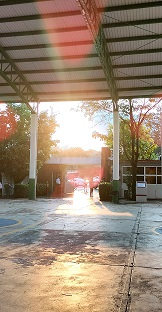

PARA VIVIR MEJOR, NECESITAMOS CAMBIAR EL MUNDO,CBTIS 187
Sección 1:
Presentación de alumnos:
Emily Martínez Hernández
Lezly Gonzalez Ramírez
Especialidad: Programación Semestre: 4 Grupo: A Turno: Matutino
Materia abordada: Construye Páginas Web
Nombre del profesor a cargo: Dr. José Fernando Chávez
A partir del ciclo escolar 2023-2024, la comunidad del CBTis No.187, conscientes de la importancia de cuidar el medio ambiente, implementará un proyecto ambiental donde se evitará y uso indiscriminado de desechables, contribuyendo a reducir las grandes cantidades de basura que se generaba diariamente, por el uso de desechables de aproximadamente 1300 estudiantes y 65 trabajadores.
Para hacer posible esta acción que impactará directamente en la salud, educación y bienestar de nuestro municipio, se realizarán las siguientes acciones:
1. En la cafetería los lonches y bebidas se servirán en utensilios no desechables, mismos que deberán ser depositados después de su uso, en los contenedores dispuestos para ello, para su posterior lavado con agua clorada.
2. Los estudiantes que traigan lonches de casa, deberán traerlo en loncheras y vasos no desechables, no envolver en el papel aluminio.
3. Si madres o padres de familia traen a sus hijos el lonche a la hora de receso, deberán entregarlo en loncheras y vasos no desechables en la puerta en la entrada y retirar.
Los estudiantes serán los responsables de llevar de regreso a casa sus utensilios, cuidando no extraviarlos, ya que como institución no podemos hacernos responsables de los extravíos, así fomentamos en los jóvenes la responsabilidad.
4. No se puede introducir al plantel agua en bolsas o vasos de plástico desechables o de unicel.
5. No se puede introducir al plantel alimentos en contenedores desechables, plásticos o de unicel.
6. Como institución educativa, tenemos el compromiso de contribuir en la formación de los estudiantes a llevar una vida saludable y sustentable. Por lo que en la cafetería escolar no se venden refrescos, ni productos ultra procesados.
7. No están permitidas las ventas en las aulas por razones de higiene y seguridad del plantel.
8. Se dispondrán botes de basura con indicadores para separar la basura desde su recopilación (orgánico, inorgánico, papel, etc.)
